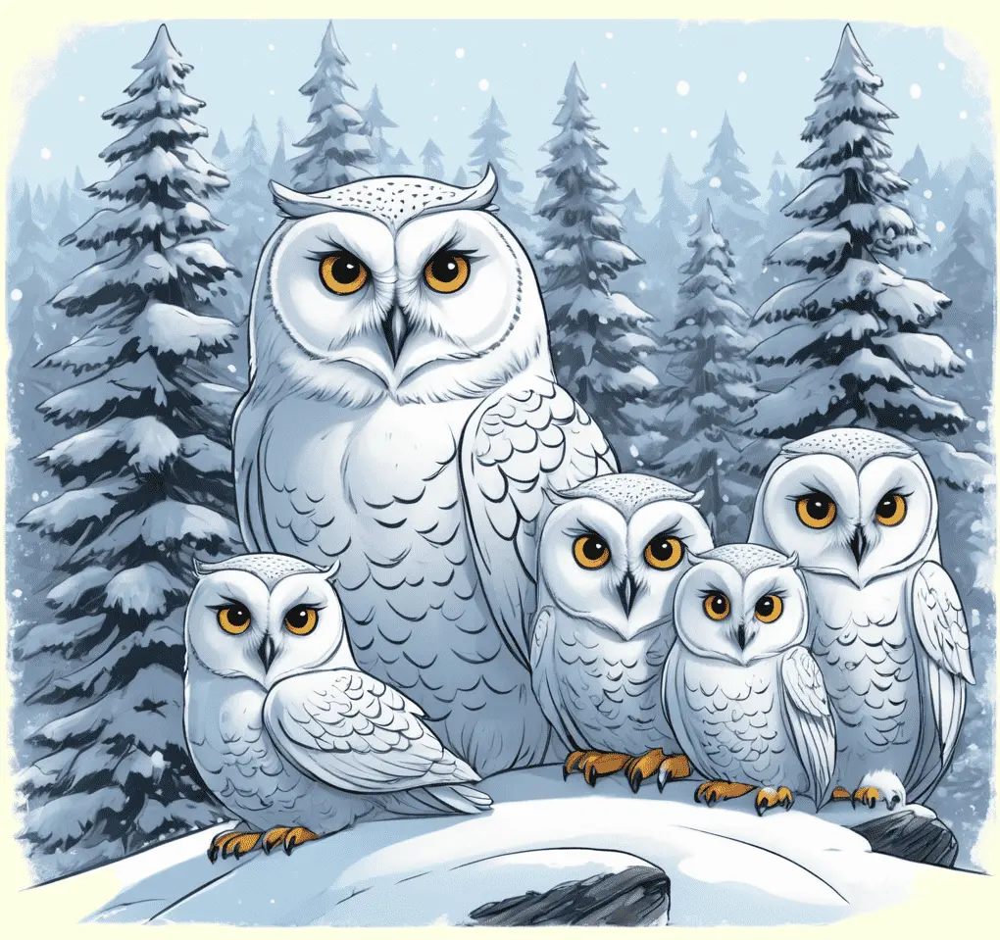

Die Schneeeule, ein majestätischer Bewohner der Arktis, fasziniert mit ihrem weißen Federkleid und ihrem scharfen Blick.
Erforsche die geheimnisvolle Welt dieser Eulenart und entdecke, wie sie sich in den eisigen Regionen der Polarzone behauptet.

Majestätische Bewohner arktischer Ebenen
Schneeeulen, auch als Polar- oder Schnee-Eulen bekannt, sind imposante Vögel, die die weitläufigen Tundren der Arktis und Subarktis bewohnen. Mit ihrem dichten, schneeweißen Federkleid sind sie perfekt an die winterlichen Bedingungen ihrer Lebensräume angepasst. Diese Eulen haben auffällige goldgelbe Augen und einen kräftigen Schnabel, der ihnen hilft, ihre Hauptbeute, wie Lemminge und andere kleine Säugetiere, zu erbeuten. Im Gegensatz zu vielen anderen Eulenarten sind Schneeeulen tagaktive Jäger und nutzen ihre scharfen Augen, um Beute aus großer Entfernung zu erspähen. Während der Brutzeit formen sie oft flache Nester auf dem Boden und legen eine kleine Anzahl von Eiern ab.
Schneeeulen sind dafür bekannt, weite Wanderungen zu unternehmen, insbesondere wenn ihre Hauptnahrungsquelle, die Lemminge, knapp wird. Diese Vögel können beträchtliche Distanzen zurücklegen, um geeignete Nahrungsquellen zu finden. Ihre Anpassungsfähigkeit an die extremen arktischen Bedingungen macht sie zu faszinierenden Bewohnern dieser kalten Regionen.
Überlebenskünstler im eisigen Norden
Der Lebensraum der Schneeeulen erstreckt sich von der arktischen Tundra bis hin zu den nördlichen Teilen von Nordamerika, Europa und Asien. Sie bevorzugen offene Landschaften, wo sie ihre Beute leicht erspähen können. Schneeeulen sind an das Leben in extremen Klimazonen angepasst, und ihr dichtes Federkleid schützt sie nicht nur vor der Kälte, sondern auch vor dem Wind. Im Winter können sie in der verschneiten Landschaft nahezu unsichtbar sein, da ihre weiße Farbe sie perfekt mit ihrer Umgebung verschmelzen lässt. Diese Tarnung dient nicht nur als Schutz vor Raubtieren, sondern auch als effektive Strategie bei der Jagd.
Die Bestände der Schneeeulen können stark variieren und hängen oft von der Verfügbarkeit ihrer Hauptnahrungsquelle ab. In Jahren mit reichlich Lemmingen kann es zu einer Zunahme der Brutpaare kommen, während in Jahren mit Lemmingknappheit die Populationen abnehmen können. Der Schutz dieser beeindruckenden Eulen erfordert nicht nur den Erhalt ihrer Lebensräume, sondern auch die Forschung und Überwachung ihrer Bestände, um langfristige Erhaltungsstrategien zu entwickeln.